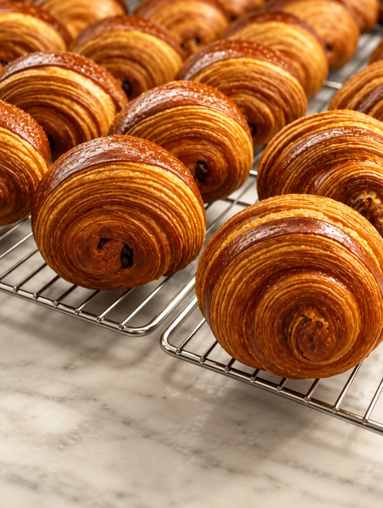
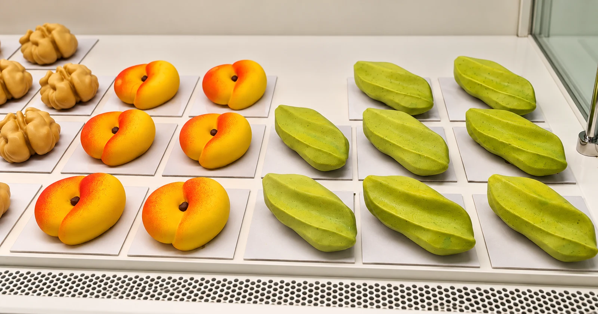
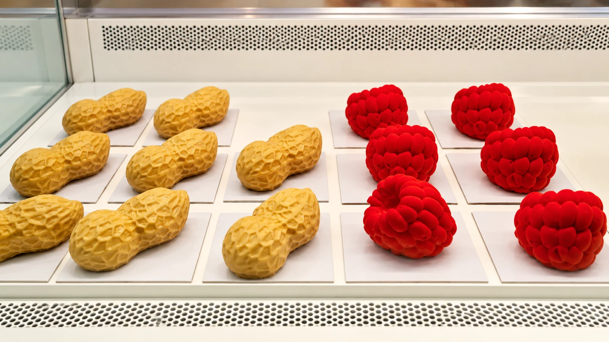
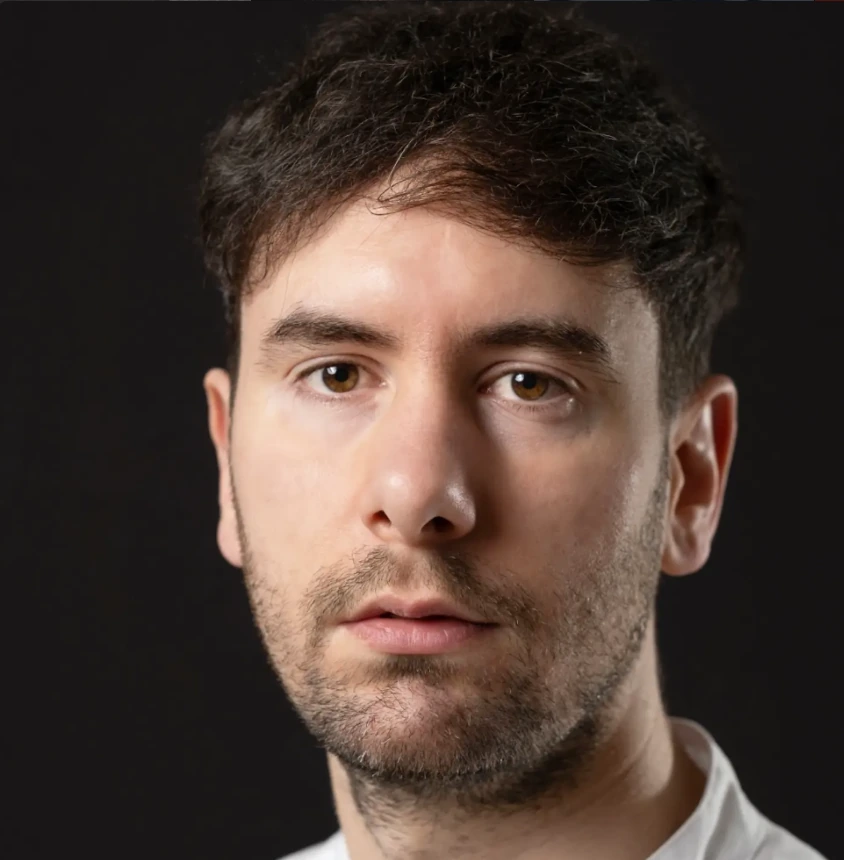
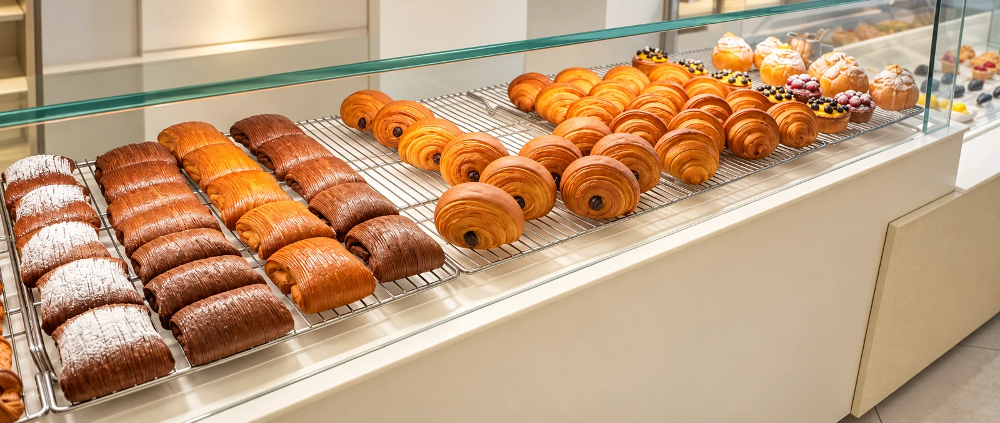

Viennoiserie
Il tempo, la tecnica, la sfoglia. Croissant, pain au chocolat e pain suisse raccontano il lato quotidiano della ricerca di GENUI.
Pasticceria in fermento · Torino
Viennoiserie, monoporzioni e una ricerca quotidiana. La pasticceria contemporanea di Giambattista Bari.
Esplora le creazioni01 / Filosofia
GENUI nasce dall’incontro tra tecnica, curiosità e desiderio di sperimentare. Ogni creazione è il risultato di ricerca, precisione e attenzione alla materia prima.
Un linguaggio contemporaneo che mette in relazione ciò che vedi e ciò che assaggi. La forma invita. Il gusto completa il racconto.
02 / Le creazioni
Il tempo della sfoglia.
La sorpresa di una monoporzione.

Il tempo, la tecnica, la sfoglia. Croissant, pain au chocolat e pain suisse raccontano il lato quotidiano della ricerca di GENUI.

Piccole architetture di gusto. Forme, consistenze e abbinamenti che invitano a scoprire ciò che racchiudono.
03 / Oltre l’apparenza

La pesca, il lampone, il pistacchio. Forme familiari che al primo assaggio rivelano una monoporzione di pasticceria.
È il gioco del trompe-l’œil: la sorpresa inizia dagli occhi e continua al cucchiaino.
Guarda da vicino04 / Il pasticcere

Pasticcere e fondatore di GENUI
Originario di Conversano, in Puglia, arriva a Torino nel 2018. È la passione per il croissant a indirizzare il suo percorso verso la panificazione e la pasticceria.
La selezione delle materie prime e il desiderio di trovare un linguaggio personale sono al centro del suo progetto.
Dopo le esperienze alle OGR e da Angelino, sceglie laboratori più piccoli, dove approfondire la tecnica, sperimentare e assumersi nuove responsabilità. Un percorso che il 25 febbraio 2026 porta all’apertura di GENUI, in corso Francia.
La sua pasticceria si esprime attraverso due linee: la viennoiserie, fatta di tempo e lavorazione, e le monoporzioni, in cui forme, consistenze e abbinamenti si concentrano in un formato essenziale. Il laboratorio a vista rende questo lavoro parte dell’incontro quotidiano con il cliente.
05 / Il laboratorio
Bianco, nero.
Il lavoro artigiano, a vista.

Uno spazio essenziale, nei toni del bianco e del nero. Il laboratorio a vista porta gesti, tempi e precisione al centro dell’esperienza.
La pasticceria si racconta anche così, attraverso il rapporto diretto tra chi crea e chi sceglie.
Vieni a trovarci06 / Da vicino
La materia, le mani, il quotidiano.
07 / Vieni a trovarci
Corso Francia 105 bis/B
Torino
Per gli orari di apertura,
contatta il negozio.
Genui / Torino
Corso Francia
105 bis/B.
La mappa si collega a Google solo quando la apri.